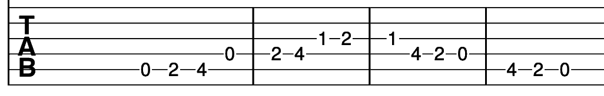

This is our last lesson. The guitar lessons on this website wrap up here. You have made it through a (hopefully not too gruelling) 6 months of guitar lessons. Let's take some time to recap to round out these guitar lessons. You should have moved from complete beginner to a novice/intermediate guitarist upon completion of this course.
If you'd like to practice any songs covered in this course then please check the Songbook tab. These songs are ordered by which lesson they were introduced, so you should be able to move from easier to harder songs. This page has been updated to contain headers for the lesson that the song was initially introduced in.
This section gives you a chance to practice the classical element of the guitar course. Below are some of the more commonly used scales and arpeggios in music.
C Major Scale

A Major Scale

D Major Scale

E Major Scale

C Major Arpeggio

Here we get a repeat of the previously seen bullet-point list to help you play bar chords. Work through these chords and build up the strength in your fingers.
Where can you go from here? One of your options is to find a local guitar teacher or guitar playing friend. It can be beneficial to have another musician listen to your playing to see if you're playing the right/wrong notes. You could search for songs on Ultimate Guitar. This route is great if you like a particular artist or genre. YouTube also has a number of useful channels dedicated to teaching guitar. Whatever your future looks like, may it be filled with music.